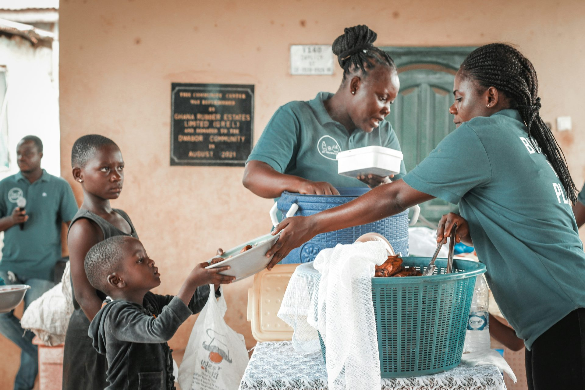

Every contribution starts somewhere
Give what you can.
With care.
Support can look like useful items, time, skills or helping a community group organise a collection.

Ways to contribute
Support that fits your capacity.
There is no single way to help. Thoughtful contributions can make a difference when they respond to real needs and are coordinated responsibly.
Food essentials
Non-perishable groceries and basic household essentials, subject to current needs.
Clothing and useful items
Clean, wearable clothing and other agreed items that are safe and appropriate to pass on.
Time, skills and partnerships
Volunteer support, collection coordination, professional skills or collaboration with community groups.
Good to know
Before you donate.
Clear expectations help keep support respectful, useful and safe.
Can I donate money through this website?
No. This is a fictional student project and has no payment processing. Never enter financial information here.
What items would be most useful?
Needs should be confirmed before collection. The concept prioritises non-perishable food, clean wearable clothing and agreed essential items.
Can a school, church or community group get involved?
The proposed model welcomes community partnerships. Use the enquiry form to describe the group and the kind of collaboration you have in mind.